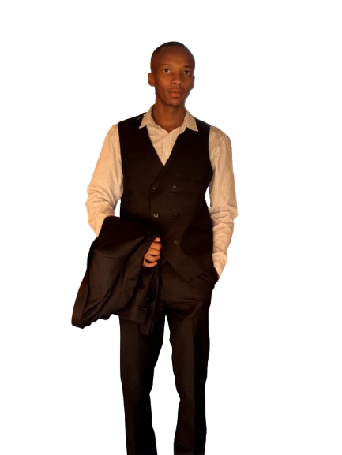

<div class="column flex full-width bg" id="homepage">
    <div class="full-width white center-center work gap-1em margin-top-16p bg2">
        <div class="column flex phone padding-left-10px">
            <h1 class="no-margin">Kgothatso</h1>
            <h1 class="no-margin">Theko<span>.</span></h1>
            <span class="line"></span>
            <p>LinkedIn | WhatsApp</p>
            <div class="row flex center-center gap-2em">
                <div>
                    <a class="no-decoration" href="https://www.linkedin.com/in/kgothatso-theko-197241226/"><i class="fa fa-linkedin-square" style="font-size:35px"></i></a>
                </div>
                <div>
                    <a class="no-decoration" href="https://wa.me/27614227501?">
                        <i class="fa fa-whatsapp" style="font-size:35px"></i>
                    </a>
                </div>
            </div>
            <p class="no-margin">GitHub </p>
            <div class="row flex center-center gap-2em">
                <div>
                    <a class="no-decoration" href="https://github.com/KgothatsoTheko">
                        <i class="fa fa-github" style="font-size:35px"></i>
                    </a>
                </div>
            </div><br>

            <button mat-flat-button color="primary"class="contactBtn"><a class="text white" href="../../../assets/KgothatsoTheko-Resume.pdf">View Resume</a></button>
        </div>
        <div class="center-center column flex full-width">
            
            
        </div>
        <div class="column padding-10px border-box flex phone">
            <span class="no-margin">Hello,</span>
            <h2 class="no-margin"><strong>I'm a <span>{{dynamicWord}}</span></strong></h2>
            <p>
                Everyday is an opportunity to improve, even if it's only 1% -- Kaizen
            </p>
            <p>
                Continuous learner, leader and software engineer/developer innovator. Graduate with a bachelor’s degree in computer and information science, specializing in Application Development. With hands-on experience in full-stack web and mobile development, I’ve built and deployed scalable applications using the MEAN stack, Ionic/React Native, Kotlin and more.
            </p>
        </div>
    </div>
</div>
